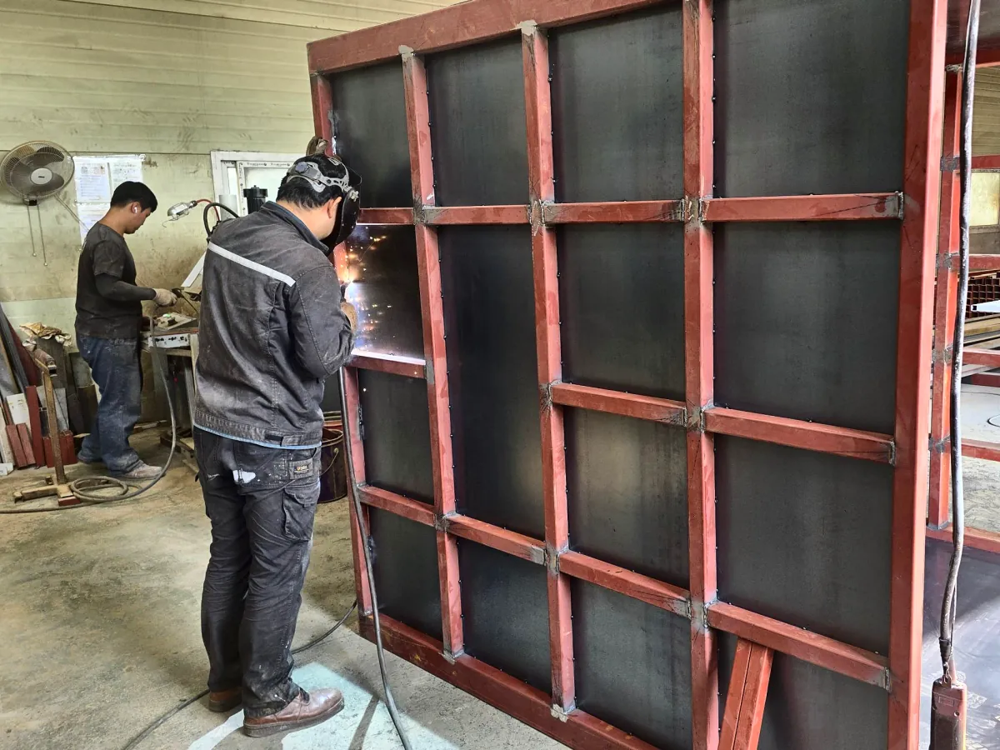
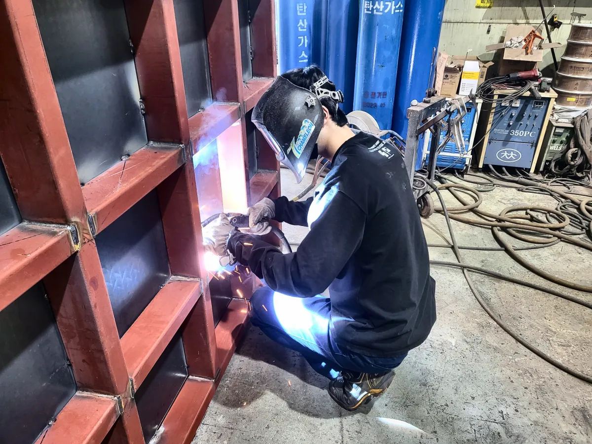

건물 밖에 세우는 리프트
엘리베이터 자리가 없는 건물도 외벽에 붙여 설치하고, 판넬로 마감해 비바람을 막습니다.
열정, 성실, 책임감이라는 경영이념 하에 일류제품 생산을 통한 고객만족 실현을 추구하며, 각종 산업 현장의 다양한 요구에 부응하는 최적의 제품을 설계, 제작함으로써 매년 꾸준한 성장을 지속하고 있습니다.
거산 임직원 모두는 그동안의 성과에 만족하지 않고 늘 열정적인 도전정신과 창의적인 사고로 물류 시스템 구축 전문기업으로서의 면모를 부단히 강화해 나갈 것입니다.
앞으로도 최고의 제품을 생산할 것임을 약속드리며 항상 최선을 다하는 기업이 되고자 노력하겠습니다.
거산리프트 대표 이재현

현장 실측 후 하중·높이·공간에 맞춰 제작
절곡·가공·용접 설비로 직접 제작
대한산업안전협회 안전검사를 거쳐 인도
김포 본사와 부산 영남사업본부에서 대응

거산리프트 대표 제품. 공장·물류창고 층간 대용량 화물 운반
설치사례 보기 →
시저 구조로 작업 높이 조절, 도크 상하차·작업대 겸용
설치사례 보기 →
창고·공장 내 팔레트 적재와 이동
설치사례 보기 →
전동 대차·드럼 운반기 등 현장 맞춤 운반 장비
설치사례 보기 →


같은 화물용 리프트라도 놓일 자리와 쓰임에 따라 마감, 문, 색상이 달라집니다. 거산리프트는 현장마다 맞춰 만듭니다.
엘리베이터 자리가 없는 건물도 외벽에 붙여 설치하고, 판넬로 마감해 비바람을 막습니다.

깔끔한 스테인리스 자동도어로 마감할 수 있습니다.

물류센터처럼 오르내림이 잦은 곳은 리프트 2대를 붙여 설치해 대기 시간을 줄입니다.

작은 공장 안에도 들어갑니다. 안쪽은 셔터, 바깥은 양쪽으로 여는 스윙 도어입니다.

바깥 출입구 위에 캐노피를 달아 비나 눈이 와도 짐을 싣고 내릴 수 있습니다.

프레임과 망 색을 따로 정할 수 있습니다. 안전색, 회사 상징색 모두 가능합니다.

바닥 턱 없이 대차·핸드카가 바로 들어가도록 진입 슬로프를 붙입니다.

리프트와 이어지는 계단, 난간대도 직접 제작해 한 번에 설치해 드립니다.
외주 없이 거산리프트의 손으로 제작하고 설치합니다. 그래서 문제가 생겨도 책임 소재가 분명합니다.
 STEP 01
STEP 01담당자가 현장을 직접 방문해 층고·하중·전기 위치를 확인하고 도면을 그립니다. 기존 호이스트·노후 리프트를 철거하고 새 리프트로 교체하는 공사도 함께 합니다.



 STEP 02카박스 프레임
STEP 02카박스 프레임카박스 프레임부터 마스트, 난간대까지 김포 공장에서 숙련 인력이 직접 절단·용접해 만듭니다.

 STEP 03크레인 설치
STEP 03크레인 설치넓은 현장은 크레인으로 한 번에 세우고, 좁은 실내는 부재를 나눠 들여와 현장에서 조립·용접합니다.
 STEP 04검사·시운전
STEP 04검사·시운전대한산업안전협회의 안전검사를 거치고 시운전을 마친 뒤, 사용법 안내와 함께 인도합니다.
거산리프트는 산업용 리프트 안전검사 12개 항목에 맞춰 설계·제작하고, 설치 후 대한산업안전협회의 안전검사를 받아 인도합니다. 번호를 누르면 각 장치의 위치와 역할을 볼 수 있습니다.
승강로 둘레를 1.8m 이상의 방호울로 막아 사람이 승강로에 접근하거나 화물이 떨어지는 것을 막습니다.
설치를 마치면 대한산업안전협회의 안전검사를 받고 시운전을 거쳐 인도합니다. 적재용량·사람탑승금지 표지를 부착하고 사용법을 안내해 드립니다.
절곡부터 가공, 용접, 운반까지 리프트 제작에 필요한 설비를 직접 갖추고 있어 품질과 납기를 직접 관리합니다.
| 기기명 | 규격 | 보유수 |
|---|---|---|
| 유압샤링기 | 10자 (6T) | 1대 |
| 유압절곡기 | 8자 | 1대 |
| 파워프레스 | 10 Ton | 1대 |
| 선반 | 6자 | 1대 |
| 밀링 | 2호기 | 1대 |
| 레디알 | - | 1대 |
| 알곤용접기 | 350A-500A | 2대 |
| CO2 용접기 | 350A-500A | 8대 |
| O2 용접기 | - | 1대 |
| 아크용접기 | 15KA | 3대 |
| 호이스트 | 3 Ton 1 Ton | 1대 1대 |
| 콤프레샤 | 15 HP | 1대 |
| 자동톱 | - | 2대 |
| 지게차 | 2.5 Ton | 1대 |
제품별로 골라 보고, 사진을 누르면 크게, "자세히 보기"를 누르면 현장 상세 페이지를 볼 수 있습니다.
설치사례를 불러오는 중…
원하시는 사양과 현장 사진을 함께 보내주시면 현장에 맞는 견적을 더 빠르고 정확하게 드립니다. 접수된 문의는 바로 저장되고 담당자에게 알림이 갑니다.
 본사 대표전화
본사 대표전화